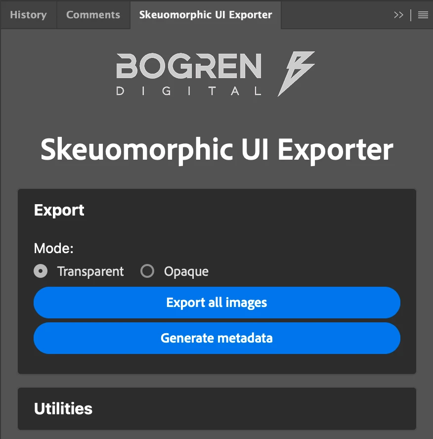
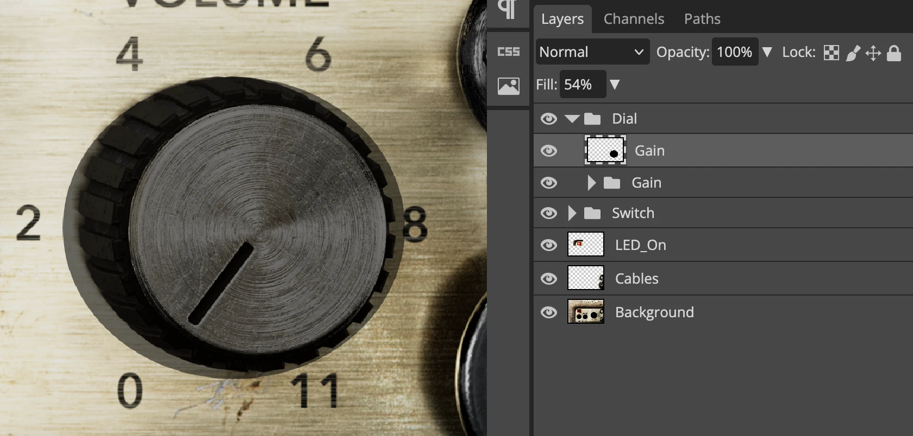
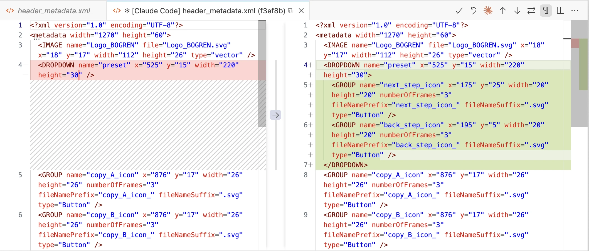

Introduction
These are the extended notes from my ADC 2025 talk in Bristol. The talk covered the UI production pipeline we built at Bogren Digital, and I got some good questions afterward. "Pixel-perfect" is admittedly a loaded term, and there's a lot that goes into actually achieving it. But if you've struggled with UI implementation in JUCE and want to see how we addressed some common pain points, this should be useful.
Table of Contents
Overview of Our Workflow
I'll start with the high-level picture, then dig into each piece.
We use JUCE's native renderer. No web views, no custom renderers. The code examples reflect that. A lot of the pipeline thinking here applies regardless of your rendering approach.
Some terms we use internally appear in bold. See the glossary at the end if anything's unclear. The original slides are here. All the code modules we released are listed here.
How It Used to Work
Our original workflow was painful:
- Graphic Designer sends a zip file full of individual frames. Just a flat list of images for every component.
- We manually assembled them into an Assembly PSD and derived a Reference Image.
- Layout was hard-coded. In
resized(), we'd write things like this:
mainGainSlider.setBoundsFloatFromRect (getRectFromBitmap (1653, 635, 600, 600)); // Magic numbers from Photoshop
- We'd eyeball the window and tweak positions using
JUCE_LIVE_CONSTANT. Here's what that looks like. - To compare implementation against the reference, we used SplitView.
We bake images into the binary. Users shouldn't have to worry about external asset folders when moving their setup between machines. One image set keeps the app size reasonable.
We also support smooth, continuous window resizing. No stepped increments. That means runtime resampling. JUCE's built-in resampling tends toward blurry results, so we started doing our own. We'd call drawImageAt() (which doesn't apply any filtering) with pre-resampled bitmaps using Lanczos. Lanczos is great for downscaling photorealistic content, but push it too far and you get ringing artifacts around hard edges. Not ideal.
Z-ordering was another headache. JUCE's default behavior is that components get stacked in the order you add them. This falls apart when you have a base class that sets up the main layout and a derived class that adds plugin-specific components; those new components end up on top by default. Then you're calling toBehind() and toFront() everywhere, and it all breaks again when the layout changes. Clunky.
How It Works Now
We've automated most of this.
- Designers deliver a structured PSD with a specific layer hierarchy. This is the Assembly PSD. We don't create it ourselves.
- A Photoshop plugin we wrote exports all the images and generates metadata (positions, sizes, component types) as XML.
- The app parses that XML at runtime and builds the UI dynamically.
We stopped doing manual reference checks. The generated layout matches the designer's intent exactly. There's nothing to verify because the source of truth is the same file.
We still ship one high-res image set and resample at runtime. More on the resampling approach below.
For Z-ordering, we adopted sorting layers, similar to what Unity does. Every component gets an explicit integer sort order. Doesn't matter when it's added or whether it comes from a base or derived class. Background is 0, content is 100, overlays are 200, tooltips are 300. Add a component, assign its layer, done. No more fragile toBehind() / toFront() chains.
We packaged these tools as JUCE modules and released them alongside the talk. Sharing things that speed up production is always worthwhile.
Dynamic UI Layout Implementation
To move away from hard-coded positions, you need a pipeline that looks roughly like this:
- Designer creates the UI (Figma, Photoshop, whatever)
- Some mechanism extracts metadata: positions, sizes, which images to load
- Images get exported
- The app loads all of this at runtime
The UI loading system and asset preparation tools are still actively developed and have gained features since the talk.
Let's walk through how we implemented each piece.
Exporting Images from Photoshop
Adobe's UXP platform is the current way to build Photoshop plugins. It's JavaScript (V8), with HTML+CSS for the UI. The developer tools are decent; hot reloading makes iteration fast.

We built a plugin to export images from the designer's PSD in a controlled way. The real insight here isn't technical: it's organizational. Talk to your designers. Figure out what's easy for them to produce and what you actually need to consume. Find the middle ground.
Here's a war story. At a different company, the 3D team rendered skeuomorphic UIs and exported frames to a PSD. The 2D team then assembled an Adobe XD document. It was a fancy design bible with component positions and export options. Developers manually transcribed those positions into an XML file for their dynamic UI loader.
They already had dynamic UI loading! Yet they were still manually copying coordinates from a "design document" that was itself manually created from the actual source file. The creation of the 'design bible' plus the manual UI implementation took about two weeks of work per UI pass.
After a few conversations with the design team, we realized the PSD already had everything we needed. One Photoshop plugin later, the two-week process became an hour.
I built another plugin for the current projects at Bogren Digital. The prerequisite is a standardized document format. If the PSD follows a consistent structure, we can automate against it.
The structure looks like this:
Root
├── Buttons
│ ├── Button1
│ │ ├── On
│ │ └── Off
│ └── Button2
│ ├── On
│ └── Off
├── Knobs
│ ├── Knob1
│ │ ├── 001
│ │ ├── 002
│ │ ├── 003
│ │ └── ... (127 frames)
│ └── Knob2
│ ├── 001
│ ├── 002
│ ├── 003
│ └── ... (127 frames)
└── Background
The idea: group layers by component type at the root level (buttons, dials, switches). Each component gets its own group containing all its frames. Keep frame ordering consistent across components. It makes everything downstream simpler.
Static images like backgrounds sit at the root level ungrouped.
A New Feature: Defining Hitboxes in Photoshop
One recent improvement to the UI Loader system is support for loading optional hitbox masks from the original design file:

If we detect a single layer with the same name as a component group, we treat it as the hitbox mask for that component. Implementing hitbox detection logic in custom components is left to end users. The default implementation in the built-in components looks like this:
bool hitTest(int x, int y) override
{
// Use mask-based hit testing if available
if (hitboxMask.isValid())
{
return BogrenDigital::UILoading::HitBoxMaskTester::hitTest(*this, x, y, hitboxMask);
}
// Fall back to manual rectangular bounds
/*
...
*/
}
Our HitBoxMaskTester utility checks the pixel in the image that proportionally corresponds to the tested point in the current component. If any non-transparent value is detected, click events should be triggered.
The main benefit: we can support oddly-shaped hitboxes without defining them in C++ code. It's much faster to draw a mask in Photoshop than to calculate and hardcode arbitrary polygons.
Generating the Layout Definition
The same plugin that exports images also generates the layout definition: an XML file the app parses at startup to build the UI. It looks like this:
<?xml version="1.0" encoding="UTF-8"?>
<metadata width="2430" height="1600">
<IMAGE name="LED_On" file="LED_On.png" x="313" y="489" width="688" height="410" imageType="raster" />
<IMAGE name="Cables" file="Cables.png" x="1989" y="489" width="441" height="1111" imageType="raster" />
<IMAGE name="Background" file="Background.png" x="0" y="0" width="2430" height="1600" imageType="raster" />
<DIAL name="Gain Dial" x="1498" y="793" width="582" height="560" numberOfFrames="127" fileNamePrefix="Gain Dial_" fileNameSuffix=".png" hitboxMask="Dial_Gain_HitboxMask.png" imageType="raster" />
<SWITCH name="Power Switch" x="554" y="998" width="329" height="364" numberOfFrames="2" fileNamePrefix="Power Switch_" fileNameSuffix=".png" imageType="raster" />
<SWITCH name="Channel Switch" x="987" y="1004" width="327" height="365" numberOfFrames="2" fileNamePrefix="Channel Switch_" fileNameSuffix=".png" imageType="raster" />
</metadata>
The root element specifies the design's native resolution. Each child element represents either a static image (IMAGE) or an interactive component (DIAL, SWITCH, etc.).
The attributes are straightforward: x, y, width, height define the bounding box. For animated components, numberOfFrames tells the loader how many images to expect, and fileNamePrefix/fileNameSuffix define the naming pattern.
The imageType="raster" attribute hints that we handle multiple types of graphical assets in our system (raster and vector). More on this later.
hitboxMask is an optional attribute specifying the filename of the hitbox mask image, if one exists for the given component.
The name attribute comes directly from the Photoshop layer name. This means typos in the PSD propagate straight through to your code. You'll discover "Gain Dail" exists when your parameter binding fails at runtime. Such is life.
Using the UI Loader
The UI builder has two dependencies:
- A container
juce::Componentobject to which all components will be added. - An image loader utility that wraps around the functions and members of the binary data namespace generated when working with binary assets in JUCE projects.
A factory pattern handles component creation. If we need custom component types, we register a factory for them before loading the UI.
During initialization, we parse the layout definition line-by-line to create the required components.
Initialization looks like this:
void initializeUILoader()
{
imageLoader = std::make_unique<BogrenDigital::UILoading::BinaryAssetImageLoader> (
BinaryData::namedResourceList,
BinaryData::namedResourceListSize,
BinaryData::getNamedResource,
BinaryData::getNamedResourceOriginalFilename);
uiLoader = std::make_unique<BogrenDigital::UILoading::UILoader> (uiContainer, *imageLoader);
// register factories before creating the components
uiLoader->getComponentFactoryRegistry().registerFactory<TwoPositionSwitchKnobFactory> ("SWITCH", "raster");
uiLoader->getComponentFactoryRegistry().registerFactory<BogrenDigital::UILoading::SwitchFactory> ( "TOGGLE", "raster");
uiLoader->getComponentFactoryRegistry().registerFactory<LampFactory> ( "LAMP", "raster");
uiLoader->loadUI ("metadata.xml");
}
The payoff comes in resized():
void resized() override
{
// Size the container first, then apply layout
// UILoader automatically maintains aspect ratio and repositions components
uiContainer.setBounds(getLocalBounds());
uiLoader->applyLayout();
}
No more hard-coded positions. This is much cleaner.
Tangent: MCP-based Figma Integration With LLMs
We covered how graphical assets can be lifted from Photoshop and displayed in our JUCE application, but what if you (or your designers) use Figma instead?
We mostly use Figma for non-skeuomorphic menus that are reused between products and rarely change. Setting up a full automated pipeline for these wasn't justified. But we still wanted to use our UI loader system for non-skeuomorphic components, and we wanted to avoid manually deriving the layout definition and exporting images.
This is 2025, so LLM-based workflows are getting genuinely useful for tedious tasks like these. Figma has an MCP server built into their app (available in dev mode). This lets LLM-based agents query your design details and derive the same XML structure we discussed earlier:

One current limitation of Figma's built-in MCP server: it can't export images as SVG. We had to rely on third-party MCP servers for that.
Specializing the UI Loader for Various Image Types
The UI loader can handle multiple image types simultaneously, so you can load different layouts together:
uiLoader->getComponentFactoryRegistry().registerFactory<ImageComponentFactory> ("IMAGE", "raster");
uiLoader->getComponentFactoryRegistry().registerFactory<SVGImageComponentFactory> ( "IMAGE", "vector");
This factory pattern makes the UI loader system highly customizable and fairly generic.
Conclusion
In Part 1, we looked at the general overview of our UI implementation workflow at Bogren Digital and how we evolved our processes over time. We also explored the internals of our dynamic UI loading system and its offline authoring tools.
In upcoming articles, we'll dive into component ordering on the z-plane, resizing and resampling of images, and more.
Glossary
| Name | Description |
|---|---|
| Assembly PSD | The Photoshop document containing all component frames in their correct positions, representing the complete UI layout. |
| Reference Image | A flattened export of the Assembly PSD used to validate the implementation against the design. |
| Sorting Layer | An integer z-order value assigned to each component. Components are rendered in sort order regardless of when they were added to the hierarchy. We use named constants (Background = 0, Content = 100, Overlay = 200, Tooltip = 300) with room for fine-grained ordering between them (Background + 1 for elements that sit just above the background, etc.). |
| Layout Definition | The XML file generated by the Photoshop plugin, containing component positions, sizes, types, and image references. Parsed at runtime to construct the UI. |
| Hitbox Mask | A small image matching a component's proportions used for pixel-accurate hit testing. Non-transparent pixels indicate clickable regions, enabling support for irregular shapes without hardcoded geometry. |